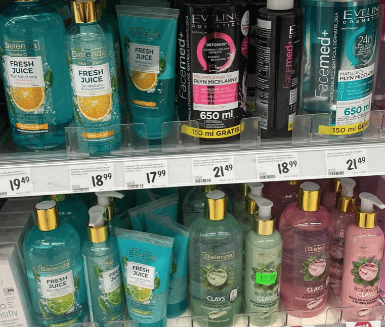

Mỹ phẩm Ba Lan
12.08.2020 | Tác giả: @Justyna
Ở Ba Lan - cũng như nhiều đất nước khác, mọi người đều chăm sóc cơ thể và da của họ.
Đặc biệt đối với phụ nữ, tóc và da mặt là nơi quan trọng nhất.
Với những người không nói tiếng Ba Lan, việc tìm đúng sản phẩm phù hợp với họ là một
điều kỳ diệu, bởi vì họ không thể hiểu được tác dụng của mỹ phẩm đó.
Trong chuỗi bài về làm đẹp này, chúng tôi sẽ chia sẻ với bạn một số mẹo nhỏ và những mỹ
phẩm được phụ nữ Ba Lan yêu thích.
Có rất nhiều hiệu thuốc ở Ba Lan, nơi mà bạn có thể mua rất nhiều sản phẩm. Dưới đây là
một số hãng nổi tiếng:

MIYA
Một sản phẩm siêu tự nhiên phù hợp với mọi loại da. Đặc biệt phổ biến nhất là các serum và các vỏ hạt enzyme. Thương hiệu này chỉ mới bắt đầu xuất hiện trên thị trường Ba Lan, nhưng MIYA rất đáng giá vởi vì sản phầm có rất nhiều ngọc trai bên trong ...
TOŁPAlà một thương hiệu mỹ phẩm đặc biệt dành cho người có làn da mỏng, dễ bị kích ứng và nhạy cảm. Các sản phẩm của nhãn hiệu này không gây mẫn cảm và rất nhẹ nhàng trên da. Gel TOŁPA không làm hỏng lớp hydrolipid của da và tạo một lớp phủ mỏng manh trên da. Thêm vào đó, kem nuôi dưỡng sâu và mang lại sự dịu nhẹ dành cho làn da khô..
 BIELENDALà một trong những thương hiệu phổ biến nhất, một số sản phẩm Bielenda Professional được bày bán trong các viện da liễu và thẩm mỹ viện. Sản phẩm của nhãn hiệu này phù hợp với mọi loại da như da khô, da lão hóa, da dầu và da hỗn hợp. Trong các cửa hàng, bạn có thể dễ dàng tìm thấy nước hoa hồng, sữa rửa mặt, kem dưỡng da, mặt nạ và nhiều hơn thế nữa. Khi dùng các sản phẩm từ thương hiệu này, bạn có thể tạo ra một quy trình chăm sóc da buổi sáng và buổi tối hoàn hảo không chỉ cho phụ nữ mà còn cho cả nam giới. Nhiều sản phẩm của thương hiệu này rất tuyệt vời, chúng tôi sẽ đề cập trong các bài viết tiếp theo.
BIO cosmeticsSoraya Plante và Garnier BIO. Nếu bạn không chỉ quan tâm đến làn da đẹp, mà còn muốn bảo vệ môi trường và mua các sản phẩm chỉ chứa các thành phần tự nhiên, bạn nhất định phải xem qua hai thương hiệu này và các sản phẩm của họ. Bạn sẽ thích chúng đó!